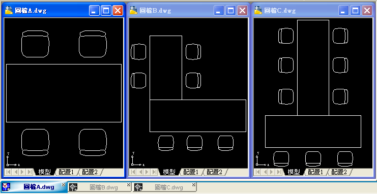
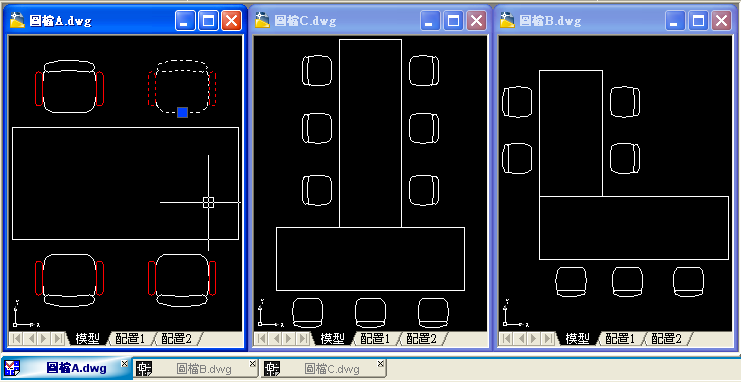

題目說明
圖檔A.dwg 中插入了一個「椅子01」圖塊，並且完成擺放位置配置。
圖檔B.dwg 中插入了一個「椅子01」圖塊，並且完成擺放位置配置。
圖檔C.dwg 中插入了一個「椅子01」圖塊，並且完成擺放位置配置。

問題
圖檔A.dwg 的「椅子01」圖塊作了修改（紅色物件）。圖檔B.dwg 及圖檔C.dwg 也需要修改。
請問您會如何快速修改，更新圖檔B.dwg 及圖檔C.dwg 中「椅子01」圖塊？

先想想看解題方式不拘，方法有很多種，你可以先想想自己的做法，再往下看解答。
解答一：設計中心重新定義圖塊
秘訣就是「設計中心」ADCENTER。
解答二：腳本檔批次重新定義圖塊
腳本語法說明：打開 DWG 圖檔（含路徑），插入更新後的圖塊 DWG 檔，重新定義圖面中的圖塊，再刪除插入的圖塊。
DWG 範例檔下載：https://goo.gl/aWk8GX